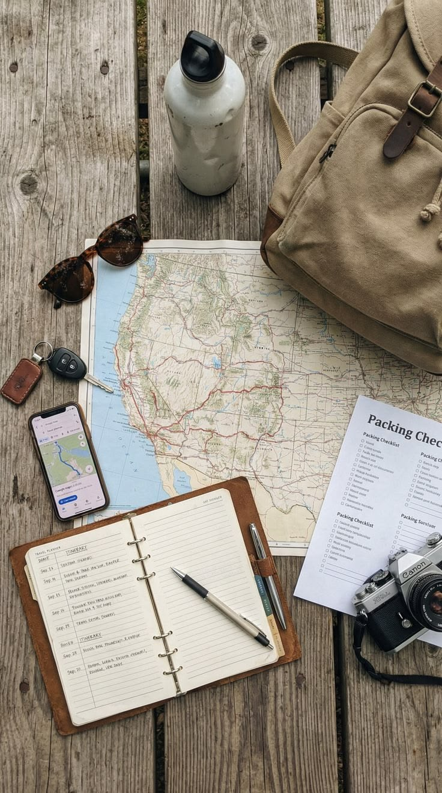

Lost Something? Let's Find It.
Losing your keys, wallet, or backpack can be overwhelming. FoundIt connects item owners with honest finders through safe, QR-enabled smart stickers.
Get Started
How FoundIt Works
01. Tag Items
Register your everyday belongings and attach a unique FoundIt QR tag.
02. Finder Scans
When an item is found, scanning the QR tag opens a secure return page.
03. Safe Return
Review contact messages in your dashboard and safely recover your item.